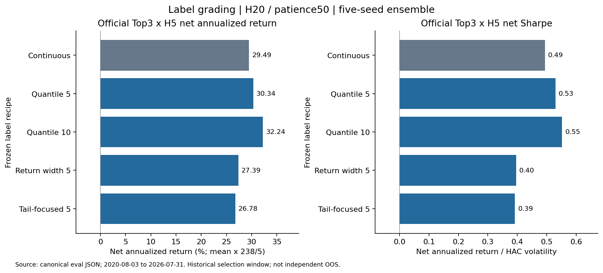
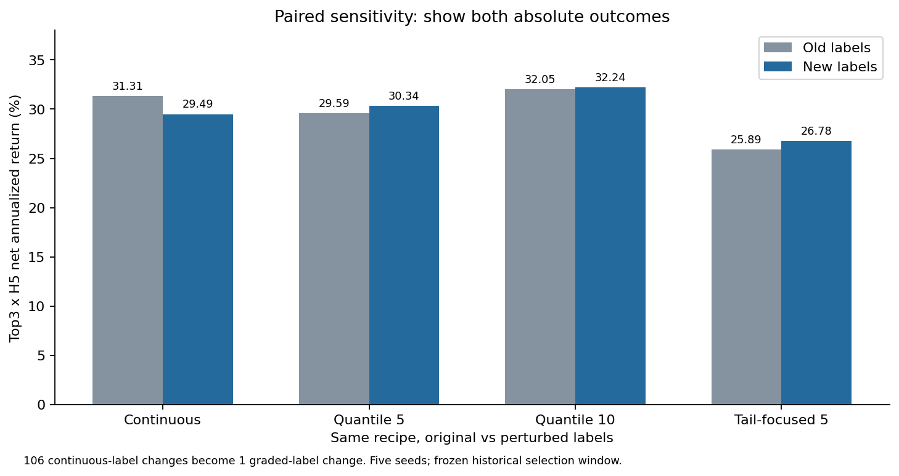

标签分级：去掉细微排名，能否保留预测能力？
状态：completed · 4/4 个候选已评估 · 本轮实际启动 35 次拟合（成功 35 次）。前序研究 111 次，本轮另行记账。
用户指定 H20／patience50 配对控制。固定全A、Alpha158+range、M0日期/权重、五种子、200轮上限和Top5×H5早停；只改训练标签。正式全局基线仍为历史v2。2020-08-03～2026-07-31是历史选型窗口，不是独立样本外检验。
本轮结论
本轮硬分档没有一致地解决标签敏感性。等样本10档的历史选型窗收益和夏普最好，可保留为后续研究候选；但头部选股对标签扰动反而更敏感，且分年改善不一致，因此不能把收益改善解释为稳健性已得到证明。正式基线与生产配置不变。
- 已完成4个预先冻结的候选、35次拟合（20个主模型＋15个旧标签配对），无失败或重试。全部使用H20／patience50、固定五种子及同一特征、样本、权重、早停与正式评估口径。
- 同源连续标签对照：Top3×H5扣费净年化29.49%、波动59.72%、夏普0.494、全局H5 RankIC 0.09856。这里是模型头部收益的算术年化，不是策略账户CAGR。
- 等样本10档：净年化32.24%、波动58.37%、夏普0.552、RankIC 0.09869。新旧标签两侧净年化32.24%／32.05%均高于各自连续对照29.49%／31.31%；但Top3名单重合率从对照85.45%降至79.70%。只有0.19个百分点的收益差距，不意味着预测更稳定。
- 等样本5档：净年化30.34%、夏普0.530、RankIC 0.09892；Top3配对重合率86.79%，只比对照提高1.34个百分点。旧标签侧净年化29.59%低于旧连续对照31.31%，所以差距缩小并非两侧表现都改善。
- 每日最小值至最大值等涨幅5档：净年化27.39%、波动69.16%、夏普0.396、RankIC 0.06437，整体弱于对照。典型日最大档占约67.5%，极端日达99.93%；五种子最佳轮为8～39轮，存在浅树和同分敏感性。旧原始收益幅度快照缺失，未伪造该方法的旧／新标签配对。
- 两端少、中间多5档：净年化26.78%、波动68.31%、夏普0.392；RankIC虽为0.09933，头部收益仍较差。种子间Top3平均重合率27.21%，低于对照35.24%。seed1000在新旧标签下均选第3轮，Top5边界813／1448天同分，反序诊断选第1轮；较高RankIC和较小标签差异不能替代头部稳定性检查。
- 分年上，等样本10档在2020、2021、2022、2025段净年化高于对照，在2023、2024、2026段较低；2026段为12.27%，对照19.32%。D风格净年化16.44%高于对照11.81%，F、T风格净年化略低。没有获得跨年、跨风格的一致改善。
- 排名分档把106条float32标签差异压到1条，但剩余跨档跳变约为0.706／0.348／1.194，原连续标签最大单条变化约0.00534。组内差异被消除，同时边界变化被放大；本轮证据支持区分输入差异条数、预测一致性和实现收益，而非合并成一个稳健性判断。
2020-08-03～2026-07-31为参与早停和选型的历史窗口，H5退出截断至2026-07-23；不是独立样本外检验；仅检验4个固定配方及这一对真实标签快照；不能推断所有n、所有等宽定义或所有噪声扰动；2020和2026仅覆盖部分年度；F风格只有2024年7个月、136个评估日；标签分档也改变目标分布、每日方差、极端样本权重和边界跳跃，不能把全部表现差异直接归因为降噪；正式v2仍为基线，未晋升或修改策略、生产配置；平台单行摘要为事先指定的等样本5档代表值，全部方案见本报告
训练前定义与标签检查
等样本按每日排名分5/10档；两端少中间多按5% / 15% / 60% / 15% / 5%分5档，原始同值不拆散。等涨幅按每日原始H20收益最小值到最大值等距分5档，不做事后缩尾。每档固定序数分数，只在当前训练集确定一次线性缩放以匹配连续目标均值/标准差；同一缩放用于旧标签配对，分档后不再次排名。
5,448,963条训练样本的顺序、特征、缺失掩码及权重固定。旧/新原始规范化标签差106条；三个排名方案均只余1条跨档。若分档后再做每日CSRankNorm，差异会扩散到1129／564／2115条，故未采用该编码。这是输入诊断，不代表模型或收益更稳定。
| 候选 | 各档样本数（由低到高） | 典型日最大档占比 | 极端日最大档占比 | 配对标签差异 |
|---|
| 等样本 · 5档 | 1,088,603 / 1,089,814 / 1,089,747 / 1,089,799 / 1,091,000 | 20.0% | 20.6% | 1 |
| 等样本 · 10档 | 543,520 / 545,083 / 544,742 / 545,072 / 545,269 / 544,478 / 544,751 / 545,048 / 544,767 / 546,233 | 10.0% | 11.2% | 1 |
| 等涨幅 · 5档 | 1,341,046 / 3,114,098 / 853,361 / 124,525 / 15,933 | 67.5% | 99.9% | 旧原始收益快照缺失 |
| 两端少中间多 · 5档 | 270,983 / 817,620 / 3,269,360 / 817,162 / 273,838 | 60.0% | 60.2% | 1 |
边界风险：连续标签旧/新最大单条变化约0.00534；保留下来的1条跨档，在等样本5档、等样本10档、两端少5档中分别跳变约0.706 / 0.348 / 1.194。减少变化条数并未降低这次扰动的总幅度；分档的边界跳变必须由配对模型结果判断。统一全局方差也不等于保持每日方差或极端样本权重。
五种子合成信号：Top3×H5正式指标

净年化采用模型头部收益 ×238/5；波动采用HAC年化标准差，夏普=净年化/波动。这里没有账户CAGR。官方数字来自逐种子日截面z-score后等权合成的一次评估。
| 方案 | 扣费净年化 | 扣费波动 | 扣费夏普 | 未扣费年化 | 日换手 | 全局H5 RankIC |
|---|
| 连续标签 · 同源H20对照 | 29.49% | 59.72% | 0.494 | 33.42% | 17.95% | 0.09856 |
| 等样本 · 5档 | 30.34% | 57.23% | 0.530 | 34.31% | 18.17% | 0.09892 |
| 等样本 · 10档 | 32.24% | 58.37% | 0.552 | 36.16% | 17.94% | 0.09869 |
| 等涨幅 · 5档 | 27.39% | 69.16% | 0.396 | 30.73% | 15.29% | 0.06437 |
| 两端少中间多 · 5档 | 26.78% | 68.31% | 0.392 | 30.65% | 17.67% | 0.09933 |
| 连续标签 · 旧标签对照 | 31.31% | 59.62% | 0.525 | 35.26% | 18.03% | 0.09865 |
分年：主格Top3×H5
扣费净年化
| 方案 | 2020 | 2021 | 2022 | 2023 | 2024 | 2025 | 2026 |
|---|
| 连续标签 · 同源H20对照 | 9.07% | 40.29% | 9.16% | 23.53% | 40.96% | 47.67% | 19.32% |
| 等样本 · 5档 | 18.98% | 51.09% | 21.38% | 20.49% | 28.12% | 50.36% | 2.88% |
| 等样本 · 10档 | 21.79% | 46.90% | 16.90% | 21.64% | 37.63% | 53.38% | 12.27% |
| 等涨幅 · 5档 | 11.86% | 66.61% | 17.82% | 2.39% | 36.75% | 38.15% | -6.09% |
| 两端少中间多 · 5档 | -6.05% | 48.02% | 25.51% | 29.08% | 28.97% | 43.90% | -23.74% |
扣费波动
| 方案 | 2020 | 2021 | 2022 | 2023 | 2024 | 2025 | 2026 |
|---|
| 连续标签 · 同源H20对照 | 46.33% | 51.12% | 57.11% | 41.09% | 98.54% | 38.62% | 49.40% |
| 等样本 · 5档 | 48.04% | 51.56% | 59.90% | 39.78% | 88.83% | 36.63% | 47.72% |
| 等样本 · 10档 | 52.16% | 52.77% | 59.64% | 38.74% | 91.90% | 35.35% | 49.59% |
| 等涨幅 · 5档 | 41.15% | 58.49% | 73.49% | 44.02% | 103.99% | 66.53% | 50.26% |
| 两端少中间多 · 5档 | 51.58% | 58.31% | 74.12% | 49.58% | 104.83% | 52.82% | 46.53% |
扣费夏普
| 方案 | 2020 | 2021 | 2022 | 2023 | 2024 | 2025 | 2026 |
|---|
| 连续标签 · 同源H20对照 | 0.196 | 0.788 | 0.160 | 0.573 | 0.416 | 1.234 | 0.391 |
| 等样本 · 5档 | 0.395 | 0.991 | 0.357 | 0.515 | 0.317 | 1.375 | 0.060 |
| 等样本 · 10档 | 0.418 | 0.889 | 0.283 | 0.559 | 0.409 | 1.510 | 0.247 |
| 等涨幅 · 5档 | 0.288 | 1.139 | 0.243 | 0.054 | 0.353 | 0.573 | -0.121 |
| 两端少中间多 · 5档 | -0.117 | 0.824 | 0.344 | 0.587 | 0.276 | 0.831 | -0.510 |
分风格：主格Top3×H5
扣费净年化
| 方案 | D | F | T |
|---|
| 连续标签 · 同源H20对照 | 11.81% | 129.38% | 43.64% |
| 等样本 · 5档 | 20.32% | 101.67% | 31.70% |
| 等样本 · 10档 | 16.44% | 125.49% | 43.08% |
| 等涨幅 · 5档 | 15.07% | 135.62% | 19.85% |
| 两端少中间多 · 5档 | 13.61% | 131.59% | 23.62% |
扣费波动
| 方案 | D | F | T |
|---|
| 连续标签 · 同源H20对照 | 52.59% | 111.45% | 44.06% |
| 等样本 · 5档 | 52.48% | 100.40% | 42.66% |
| 等样本 · 10档 | 52.45% | 103.80% | 43.82% |
| 等涨幅 · 5档 | 65.41% | 118.88% | 43.67% |
| 两端少中间多 · 5档 | 63.51% | 119.19% | 46.35% |
扣费夏普
| 方案 | D | F | T |
|---|
| 连续标签 · 同源H20对照 | 0.225 | 1.161 | 0.991 |
| 等样本 · 5档 | 0.387 | 1.013 | 0.743 |
| 等样本 · 10档 | 0.313 | 1.209 | 0.983 |
| 等涨幅 · 5档 | 0.230 | 1.141 | 0.455 |
| 两端少中间多 · 5档 | 0.214 | 1.104 | 0.510 |
F风格仅覆盖2024年7个月、136个评估日，不能据此推断跨年稳定性。
种子间一致性与合成检查
名单重合取同一交易日两两种子的平均值（10对），在正式推理与正式过滤后计算。种子区间用于诊断，官方数字始终是合成信号的一次评估。
| 方案 | Top3平均重合 | Top5平均重合 | 逐种子净年化范围 | 合成低于全部种子：净年化/夏普 |
|---|
| 连续标签 · 同源H20对照 | 35.24% | 39.42% | 27.63%～31.36% | False / False |
| 连续标签 · 旧标签对照 | 34.81% | 39.14% | 24.84%～31.36% | False / False |
| 等样本 · 5档 | 35.21% | 39.29% | 23.40%～31.40% | False / False |
| 等样本 · 10档 | 35.17% | 39.27% | 25.00%～29.16% | False / False |
| 等涨幅 · 5档 | 38.28% | 42.23% | 21.15%～24.57% | False / False |
| 两端少中间多 · 5档 | 27.21% | 30.71% | 25.37%～28.04% | False / False |
配对敏感性：固定其余输入，只替换旧/新标签

先看两侧绝对表现，再看差距。差距变小也可能来自较好一侧变差。等涨幅缺少对应旧原始收益幅度，本轮不伪造这组106条差异的配对。
| 标签处理 | 旧标签净年化 | 新标签净年化 | 新−旧（百分点） | Top3名单重合 | Top5名单重合 |
|---|
| 连续标签 · 同源H20对照 | 31.31% | 29.49% | -1.82 | 85.45% | 87.00% |
| 等样本 · 5档 | 29.59% | 30.34% | +0.75 | 86.79% | 88.58% |
| 等样本 · 10档 | 32.05% | 32.24% | +0.19 | 79.70% | 81.78% |
| 两端少中间多 · 5档 | 25.89% | 26.78% | +0.89 | 88.72% | 89.81% |
逐种子早停与同分诊断
反序只改变同分优先顺序，属于同一已观察轨迹的诊断，不参与选轮。未观察到停止时，反序“最佳轮”不能当作新早停规则的最终结果；200轮代表达到上限。
| 方案/输入/种子 | 选中轮 | 实际观察轮 | 选中轮Top3/5同分天数 | 轨迹最大Top5同分天数 | 反序观察最佳轮 | 反序停止轮 | 峰值进程RSS |
|---|
| 等样本 · 5档 / new / 42 | 67 | 117 | 0 / 0 | 1221 | 67 | 117 | 8.21 GiB |
| 等样本 · 5档 / new / 1000 | 100 | 150 | 0 / 0 | 1266 | 100 | 150 | 8.00 GiB |
| 等样本 · 5档 / new / 2000 | 90 | 140 | 0 / 0 | 1269 | 90 | 140 | 8.27 GiB |
| 等样本 · 5档 / new / 3000 | 74 | 124 | 0 / 0 | 1240 | 74 | 124 | 7.88 GiB |
| 等样本 · 5档 / new / 4000 | 83 | 133 | 0 / 0 | 1307 | 83 | 133 | 8.08 GiB |
| 等样本 · 5档 / old / 42 | 37 | 87 | 0 / 0 | 1221 | 37 | 87 | 8.36 GiB |
| 等样本 · 5档 / old / 1000 | 100 | 150 | 0 / 0 | 1266 | 100 | 150 | 7.96 GiB |
| 等样本 · 5档 / old / 2000 | 90 | 140 | 0 / 0 | 1269 | 90 | 140 | 8.22 GiB |
| 等样本 · 5档 / old / 3000 | 94 | 144 | 0 / 0 | 1240 | 94 | 144 | 8.38 GiB |
| 等样本 · 5档 / old / 4000 | 83 | 133 | 0 / 0 | 1307 | 83 | 133 | 7.98 GiB |
| 等样本 · 10档 / new / 42 | 57 | 107 | 0 / 0 | 1254 | 57 | 107 | 8.26 GiB |
| 等样本 · 10档 / new / 1000 | 41 | 91 | 0 / 0 | 1278 | 41 | 91 | 8.34 GiB |
| 等样本 · 10档 / new / 2000 | 73 | 123 | 0 / 0 | 1230 | 73 | 123 | 7.93 GiB |
| 等样本 · 10档 / new / 3000 | 60 | 110 | 0 / 0 | 1247 | 60 | 110 | 8.01 GiB |
| 等样本 · 10档 / new / 4000 | 95 | 145 | 0 / 0 | 1273 | 95 | 145 | 7.86 GiB |
| 等样本 · 10档 / old / 42 | 57 | 107 | 0 / 0 | 1254 | 57 | 107 | 8.28 GiB |
| 等样本 · 10档 / old / 1000 | 75 | 125 | 0 / 0 | 1278 | 75 | 125 | 8.41 GiB |
| 等样本 · 10档 / old / 2000 | 118 | 168 | 0 / 0 | 1230 | 118 | 168 | 8.22 GiB |
| 等样本 · 10档 / old / 3000 | 60 | 110 | 0 / 0 | 1247 | 60 | 110 | 8.02 GiB |
| 等样本 · 10档 / old / 4000 | 95 | 145 | 0 / 0 | 1273 | 95 | 145 | 7.70 GiB |
| 等涨幅 · 5档 / new / 42 | 25 | 75 | 0 / 0 | 1243 | 25 | 75 | 7.25 GiB |
| 等涨幅 · 5档 / new / 1000 | 14 | 64 | 3 / 2 | 1125 | 14 | 64 | 7.61 GiB |
| 等涨幅 · 5档 / new / 2000 | 8 | 58 | 102 / 102 | 1159 | 9 | 未观察到 | 7.69 GiB |
| 等涨幅 · 5档 / new / 3000 | 39 | 89 | 0 / 0 | 1158 | 39 | 89 | 7.91 GiB |
| 等涨幅 · 5档 / new / 4000 | 38 | 88 | 0 / 0 | 1266 | 38 | 88 | 7.88 GiB |
| 两端少中间多 · 5档 / new / 42 | 65 | 115 | 0 / 0 | 1274 | 65 | 115 | 7.93 GiB |
| 两端少中间多 · 5档 / new / 1000 | 3 | 53 | 764 / 813 | 1280 | 1 | 51 | 7.93 GiB |
| 两端少中间多 · 5档 / new / 2000 | 45 | 95 | 0 / 0 | 1289 | 45 | 95 | 8.12 GiB |
| 两端少中间多 · 5档 / new / 3000 | 74 | 124 | 0 / 0 | 1275 | 74 | 124 | 8.42 GiB |
| 两端少中间多 · 5档 / new / 4000 | 77 | 127 | 0 / 0 | 1267 | 77 | 127 | 8.30 GiB |
| 两端少中间多 · 5档 / old / 42 | 48 | 98 | 0 / 0 | 1274 | 48 | 98 | 8.07 GiB |
| 两端少中间多 · 5档 / old / 1000 | 3 | 53 | 764 / 813 | 1280 | 1 | 51 | 8.39 GiB |
| 两端少中间多 · 5档 / old / 2000 | 45 | 95 | 0 / 0 | 1289 | 45 | 95 | 8.48 GiB |
| 两端少中间多 · 5档 / old / 3000 | 93 | 143 | 0 / 0 | 1275 | 93 | 143 | 8.05 GiB |
| 两端少中间多 · 5档 / old / 4000 | 77 | 127 | 0 / 0 | 1267 | 77 | 127 | 8.19 GiB |
逐种子旧／新标签配对
同种子、相同特征与窗口，仅替换冻结的旧／新标签。树内容哈希的差异包括叶值变化，不能单独证明分裂结构改变。头部重合在正式推理和过滤后计算。
| 方案／种子 | 旧／新最佳轮 | 首个树内容差异轮 | Top3重合 | Top5重合 |
|---|
| 等样本 · 5档／42 | 37／67 | 1 | 59.39% | 62.73% |
| 等样本 · 5档／1000 | 100／100 | 1 | 100.00% | 99.99% |
| 等样本 · 5档／2000 | 90／90 | 1 | 100.00% | 100.00% |
| 等样本 · 5档／3000 | 94／74 | 1 | 60.45% | 62.79% |
| 等样本 · 5档／4000 | 83／83 | 1 | 100.00% | 100.00% |
| 等样本 · 10档／42 | 57／57 | 1 | 100.00% | 100.00% |
| 等样本 · 10档／1000 | 75／41 | 1 | 59.51% | 63.07% |
| 等样本 · 10档／2000 | 118／73 | 1 | 40.03% | 43.84% |
| 等样本 · 10档／3000 | 60／60 | 1 | 100.00% | 100.00% |
| 等样本 · 10档／4000 | 95／95 | 1 | 100.00% | 100.00% |
| 两端少中间多 · 5档／42 | 48／65 | 1 | 64.30% | 67.96% |
| 两端少中间多 · 5档／1000 | 3／3 | 1 | 100.00% | 100.00% |
| 两端少中间多 · 5档／2000 | 45／45 | 1 | 100.00% | 100.00% |
| 两端少中间多 · 5档／3000 | 93／74 | 1 | 72.91% | 75.76% |
| 两端少中间多 · 5档／4000 | 77／77 | 1 | 100.00% | 100.00% |
结论与判读 · 35模型／7组预测数值核验 · 15组同种子配对 · 等涨幅早停检查 · 两端少分档早停检查
来源、状态与解释边界
直接对照为最近H20/patience50；该对照不替代正式v2。仅有四个候选，不能据单个n宣布全体分档方法有效或无效。收益、夏普、波动和RankIC分别解释；输入变化减少不等于模型稳健性得到证明。本轮不晋升、不修改策略或生产配置。
冻结方案 · 标签与输入证据 · 数值摘要 · 逐候选/作业账本 · 正式Harness账本